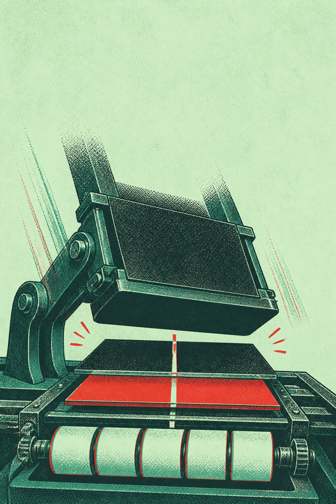

소리
맞
춰
밀
기
소수점을 밀어 몫을 찍어요
6학년 2학기 · 소수의 나눗셈
게임 시작
어떻게 놀아요?
점수
0
초
90
연속
×1
장
0
소리
오늘 장
0
최고
0
① 빨간 바 밀기
② 몫 드럼 굴리기
③ 손잡이 내려 찍기
1/3
교정 인쇄
패드 5 · 한 자리 몫
본 인쇄
패드 3 · 자리 다른 두 줄
다음
오늘 기록
점수
0
찍은 장
0
최장 연속
0
다시 찍기
완전 정렬